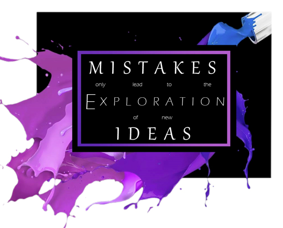
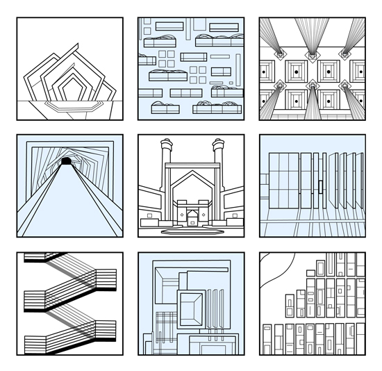
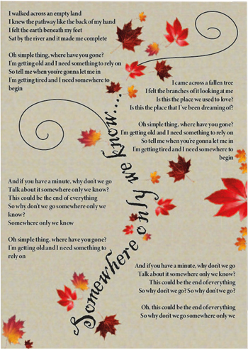

Here is a online portfolio with some of my current work
Manifesto

To me a manifesto is meant to be something to live by. It should be a way for me to express myself and it should remind me of who I want to be and what I want to do in life. It should inspire me to be the best and give my all no matter what I do. It should motivate me when times get tough and I may feel like giving up.
9 Iterations

To me a manifesto is meant to be something to live by. It should be a way for me to express myself and it should remind me of who I want to be and what I want to do in life. It should inspire me to be the best and give my all no matter what I do. It should motivate me when times get tough and I may feel like giving up.
Follow the Rythm

To me a manifesto is meant to be something to live by. It should be a way for me to express myself and it should remind me of who I want to be and what I want to do in life. It should inspire me to be the best and give my all no matter what I do. It should motivate me when times get tough and I may feel like giving up.